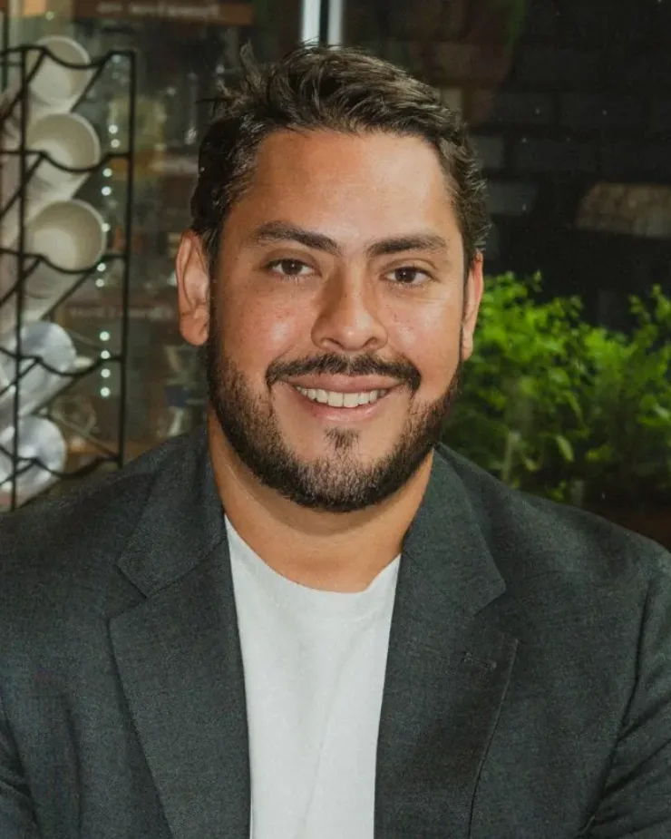
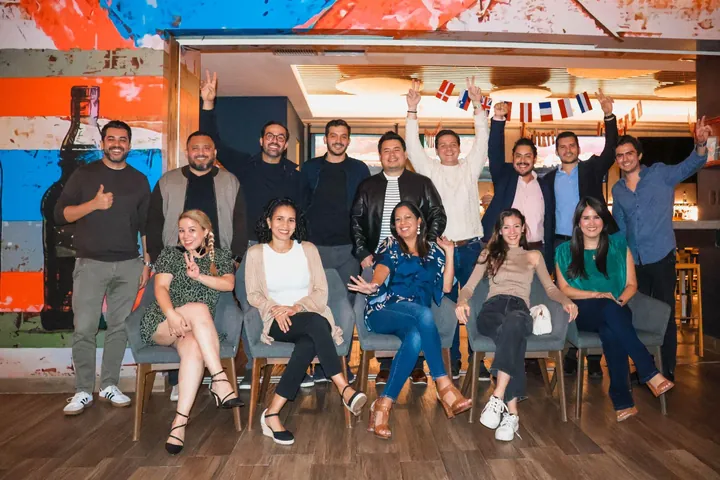
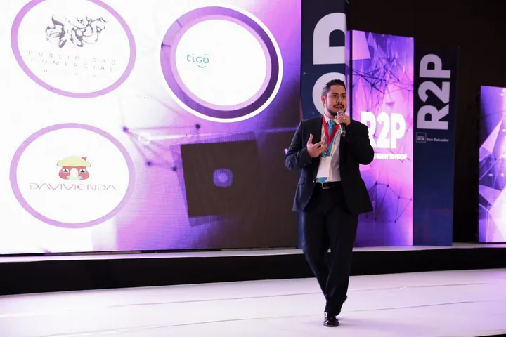
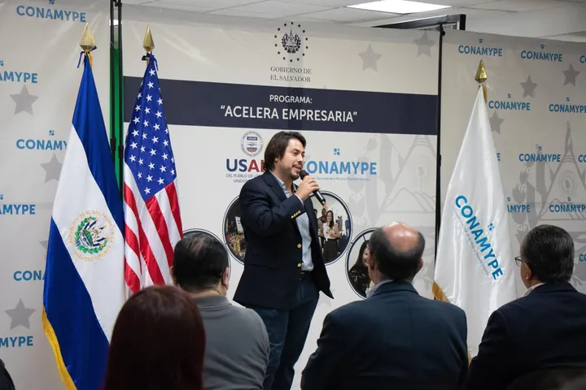
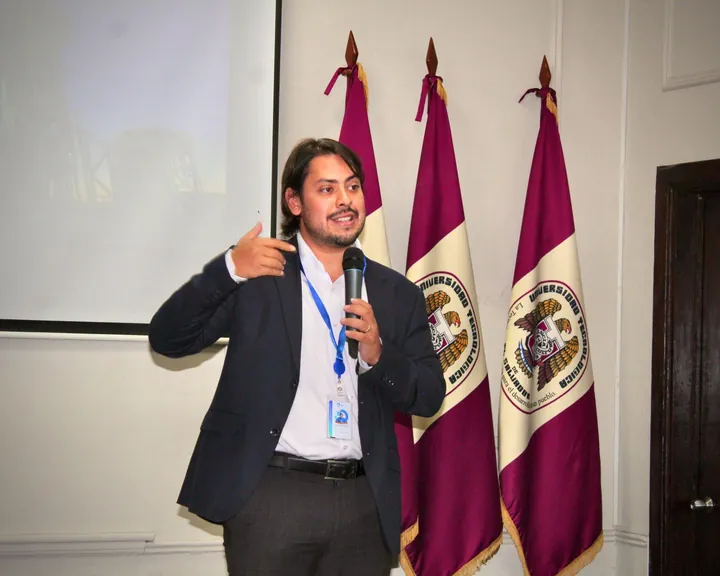

Desde El Salvador, para Centroamérica y América Latina
José Roberto Rodríguez Duque
PMPConstructor de ecosistemas de startups y CEO de CoreNest Accelerator El Salvador
Durante la última década he trabajado en la intersección entre startups, empresas, inversionistas y gobierno, ayudando a convertir retos reales de negocio en oportunidades de validación, crecimiento y escala en América Latina.

- 20 añoscreando negocios, desde el primero a los 16
- 3,500+micro, pequeñas y medianas empresas apoyadas desde Impact Hub San Salvador
- 37 personasen la delegación salvadoreña que llevó a Web Summit Lisboa
- 700+startups de 22 países aplicaron a CoreNest Accelerator
- IVLP 2022alumno del Programa de Liderazgo para Visitantes Internacionales de EE. UU.
Estudié fuera y me pude haber quedado. Regresé porque creo mucho en lo que este país puede hacer.
¿Por qué El Salvador?
Cuando estuve de intercambio en Córdoba, Argentina, era el único salvadoreño del programa. Cada vez que se hablaba de mi país, la conversación se reducía a violencia y pobreza. Me di cuenta de lo limitada que era la historia que la gente conocía de El Salvador, y decidí que quería ayudar a cambiar esa narrativa.
Después, en Barcelona, vi cómo funciona un ecosistema de startups de verdad: incubadoras, capital semilla y gente que te abre puertas. Cuando regresé en 2015, el ecosistema de startups todavía era incipiente y fragmentado. Había talento y energía emprendedora, pero los caminos, el capital y las conexiones que los fundadores necesitaban aún estaban en desarrollo.
Creo que las startups son el motor que puede hacer crecer nuestra economía más rápido. Quiero que El Salvador sea el primer paso para los fundadores: el lugar donde validas, construyes tu primera versión y demuestras que funciona, antes de escalar en América Latina.
¿Qué estoy construyendo hoy?
Dirijo CoreNest Accelerator El Salvador, una aceleradora que conecta startups con empresas que las necesitan. Todo empieza con un piloto real.
La formación sola no hace crecer a una startup. Necesita clientes, conexiones y un camino claro hacia un exit, por eso empezamos desde el otro lado. Grandes empresas de la región traen retos reales de negocio. Conectamos cada reto con una startup capaz de resolverlo y hacemos un piloto con metas claras.
Un piloto exitoso puede generar pruebas de valor, profundizar una relación corporativa y fortalecer el caso de crecimiento de la startup. A partir de ahí, CoreNest puede ayudar a explorar los caminos de mercado y de capital que tengan sentido para esa empresa.
- Una empresa trae un retoUn problema real de su negocio, con un líder que quiere resolverlo.
- Una startup hace un pilotoMedible, con tiempo definido y cerca del negocio principal de la empresa.
- El piloto abre el siguiente pasoDemostrar valor con un socio corporativo fortalece el caso para crecer, aliarse o recibir inversión.
Aliados corporativos y de medios incluyen Davivienda, Asesuisa, Publimovil y Telecorporación Salvadoreña (TCS). La aceleradora firmó una alianza con el Ministerio de Economía de El Salvador en 2025.

¿Quién debería contactarme, y para qué?
Trabajo sobre todo en El Salvador y Centroamérica, y en América Latina cuando la oportunidad lo pide.
-
Fundadores de startups
Estás construyendo una empresa de tecnología con la ambición de escalar a varios mercados. Quieres validar con clientes corporativos reales, aprender rápido y construir una empresa que con el tiempo se vuelva estratégicamente valiosa.
Aplica o escríbeme -
Líderes corporativos
Quieres innovación externa para resolver problemas reales de tu empresa. Trae un reto y usa la aceleradora como tu laboratorio de innovación, con pilotos de metas claras.
Trae un reto -
Coinversionistas
Inviertes en América Latina y quieres visibilidad sobre startups que se validan frente a necesidades corporativas reales. A través de CoreNest Accelerator, inversionistas calificados pueden conocer las oportunidades que surgen de ese proceso, sujetas a afinidad, debida diligencia y a la estructura de inversión aplicable.
Conocer más -
Gobierno e instituciones
Quieres hacer crecer la economía con innovación y posicionar a El Salvador como el lugar para empezar. He trabajado con el Ministerio de Economía e Invest in El Salvador en misiones internacionales.
Iniciemos la conversación -
Eventos y medios
Necesitas un conferencista o panelista sobre startups, innovación corporativa, capital de riesgo en América Latina o el ecosistema de El Salvador, en español o en inglés.
Invítame a hablar
¿Cómo llegué hasta aquí?
Veinte años, muchos pivotes y una constante: construir lo que hace falta, aquí.
-
Mi primer negocio: un carretón de sorbete
Cuando a mi mamá le dio cáncer, lo que más la reconfortaba durante el tratamiento era el sorbete de carretón. Aprendí a hacerlo yo mismo y lo convertí en un pequeño negocio, Sorbetería Sin Igual. Después lo vendí y con ese dinero me fui a estudiar fuera.
-
Ingeniería y años corporativos
Estudié Ingeniería Industrial en la Universidad Centroamericana José Simeón Cañas (UCA), con un intercambio en la Universidad Católica de Córdoba, Argentina. Trabajé en ventas regionales, logística y estructuras de costos en Logictires International, Joven360 y Avery Dennison, donde cotizaba programas para 30 marcas globales de ropa.
-
Barcelona y mi primera startup
Saqué mi maestría en Dirección de Proyectos en EAE Business School y la Universitat Politècnica de Catalunya. Con cuatro socios de Inglaterra, España y Argentina cofundé City Experience, una app de turismo para ciudades poco conocidas. Barcelona Activa nos incubó y ganamos 30,000 euros de capital semilla.
-
City Experience llega a casa
Convencí a mis socios de lanzar en El Salvador. Sumamos cientos de negocios locales, quedamos en cuarto lugar en Innovatics 2015 y franquiciamos el modelo en Guatemala, Costa Rica, Panamá y República Dominicana. No había salario: solo ganaba lo que vendía, y rechacé un empleo corporativo estable para seguir construyendo. Luego el mercado nos dijo la verdad: los negocios querían fotos y redes sociales, no otra app.
-
Escuchar al mercado
Pivoteamos City Experience hacia Sayhello, una agencia digital, y la hicimos crecer durante ocho años. La vendimos en 2025 y hoy es MAYNDS.
-
Impact Hub San Salvador
Entré como gerente de operaciones cuando la red global Impact Hub abrió en El Salvador, con apoyo del Banco Interamericano de Desarrollo, y después me convertí en socio y cofundador. Los primeros años fueron menos glamorosos que el título: administraba un edificio de 800 metros cuadrados, desde el aire acondicionado hasta el internet, mientras descifrábamos el modelo de negocio. Con el tiempo, nuestros programas apoyaron a más de 3,500 micro, pequeñas y medianas empresas. Ahí lancé R2P (Ready to Pitch), uno de los primeros escenarios en El Salvador donde las startups presentaban ante inversionistas y empresas, y participé en Acelera Empresaria, un programa de aceleración empresarial para mujeres salvadoreñas.
-
Llevar nuestras startups al mundo
Entrevisté a 40 de las startups más prometedoras del país y elegí a las más fuertes. Juntos formamos Delta Members, el primer club de founders salvadoreños, que se convirtió en Alpha Ventures: una comunidad para startups que ya habían levantado más de $100,000, entre ellas N1CO, Boxful, Ábaco y Fruto Infinito. En mayo de 2024 llevé a 11 de ellas a Nueva York. En noviembre de 2024, con apoyo del Ministerio de Economía e Invest in El Salvador, llevé una delegación de 37 personas entre startups, gobierno y empresas a Web Summit en Lisboa. En 2025 fuimos a Web Summit Río con la ministra de Economía.
Esos años implicaron renuncias reales, pero reforzaron una convicción: construir un ecosistema requiere paciencia, constancia y un compromiso de largo plazo.
-
CoreNest Accelerator El Salvador
Después de diez años construyendo con más convicción que ingresos, llegó el vehículo correcto. En 2025, Invest in El Salvador me pidió presentarle el ecosistema local a CoreNest Capital. En julio de 2025 me convertí en CEO de CoreNest Accelerator El Salvador. Más de 700 startups de 22 países han aplicado, y estamos construyendo el programa alrededor de retos corporativos y pilotos.
Momentos que construyeron el ecosistema
Misiones, escenarios y comunidades de los últimos diez años.








¿En qué creo?
Seis ideas que guían cómo trabajo y cómo vivo.

El capital acelera. No crea.
Nuestras primeras misiones las hicimos sin dinero. Si la visión está clara, puedes avanzar. La creación tiene que venir de los fundadores.
Planea el exit desde el primer día.
Construye pensando en el valor estratégico. Los productos cambian y los mercados evolucionan; las empresas más fuertes resuelven problemas relevantes y, con el tiempo, crean opciones de crecimiento, alianzas, inversión o adquisición.
Enamórate del problema, no del producto.
De lo único que uno se debe enamorar es de sus hijos. Un negocio se construye para que algún día lo compren. Ama el problema que resuelves y mantente abierto al feedback, aunque duela.
El Salvador es tu primer paso.
Valida y construye aquí, con el socio corporativo correcto, y luego escala rápido en América Latina. Una startup que gana la región es la primera llamada de un comprador global.
Más mujeres creando startups.
Tener dos hijas cambió mi forma de ver el mundo. El mundo de las startups sigue siendo mayormente de hombres, y quiero ayudar a cambiarlo desde mi rol.
Primero la familia y la fe.
Soy esposo y papá, y creo mucho en Dios. Las dificultades son pruebas que te hacen más fuerte. El talento suma talento, el capital trae capital y el éxito trae éxito.
Entrevistas y prensa
Donde cuento la historia con mis propias palabras.
 Ver en YouTube
Ver en YouTubeEl Salvador, el próximo Silicon Valley de LATAM
Fundamentos Media, mayo 2026. Diez años de Impact Hub a CoreNest.
 Ver en YouTube
Ver en YouTubePodcast Cerebroders
Octubre 2026. Liderazgo, startups y cómo funcionan de verdad los exits.
- CoreNest lanza su programa para startups en El SalvadorDiario El Mundo, septiembre 2025
- El Salvador impulsa su economía con startups en Web Summit LisboaDinero, noviembre 2024
- Startups salvadoreñas buscan inversión en Nueva YorkEl Salvador in English, mayo 2024
- City Experience, la ciudad en tus manosDiario El Mundo, marzo 2016
- City Experience, una app que muestra lo exclusivo del paíselsalvador.com, diciembre 2015
Preguntas frecuentes
¿Quién es José Roberto Rodríguez Duque?
José Roberto Rodríguez Duque es un constructor de ecosistemas de startups salvadoreño y CEO de CoreNest Accelerator El Salvador. Cofundó Impact Hub San Salvador y, durante la última década, ha trabajado en la intersección entre startups, empresas, inversionistas y gobierno, ayudando a que fundadores de El Salvador validen sus ideas y crezcan en América Latina.
¿Cómo se escribe su nombre?
Su nombre completo es José Roberto Rodríguez Duque. En medios también aparece como José Roberto Rodríguez, José Rodríguez o Roberto Duque. En Instagram es @joserobduque.
¿Qué hace CoreNest Accelerator El Salvador?
Conecta startups con grandes empresas que traen retos reales de negocio. Las startups resuelven esos retos con pilotos medibles que generan pruebas de valor y un caso más fuerte para crecer.
¿Con qué startups trabaja?
Startups de tecnología con la ambición de escalar a varios mercados. Buscan validar con clientes corporativos reales, aprender rápido y construir una empresa que con el tiempo se vuelva estratégicamente valiosa.
¿Cómo puede una empresa trabajar con la aceleradora?
La empresa trae un reto de negocio, la aceleradora lo conecta con una startup y ambas hacen un piloto con metas claras. Los aliados usan la aceleradora como su laboratorio de innovación externo.
¿Invierte en startups?
José Roberto trabaja con startups a través de CoreNest Accelerator. Las oportunidades de inversión, cuando aplican, se evalúan mediante el proceso formal y las estructuras de inversión de CoreNest, no a través de José Roberto de forma personal.
¿Por qué empezar una startup en El Salvador?
El Salvador ofrece registro rápido de empresas, incentivos para la innovación tecnológica y acceso directo a empresas y gobierno. Él lo ve como el primer paso: validar aquí y luego escalar en la región.
¿Da conferencias?
Sí, en español y en inglés. Entre sus escenarios recientes están el Foro Forbes Business Travel El Salvador 2026, ENADE 2026, ISD Summit 2026 en Panamá y una conferencia principal en el Foro IVLP en Acción.
Construyámoslo aquí.
Cuéntame quién eres y qué quieres construir. La forma más rápida de contactarme es LinkedIn.